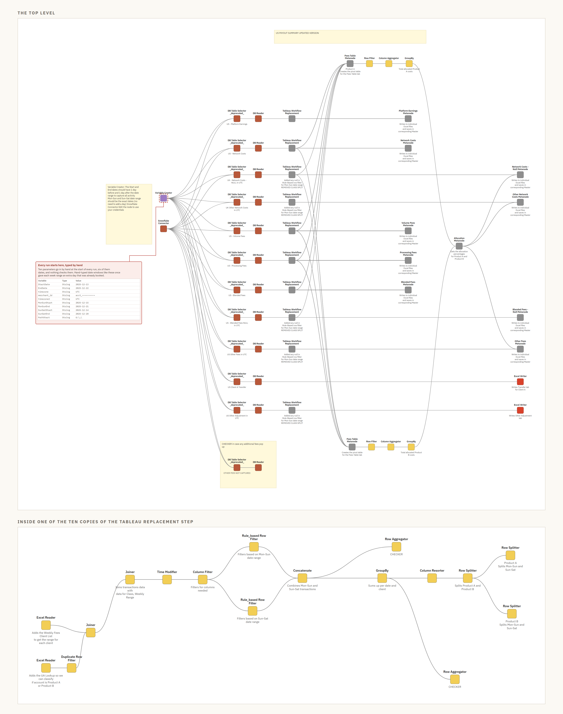
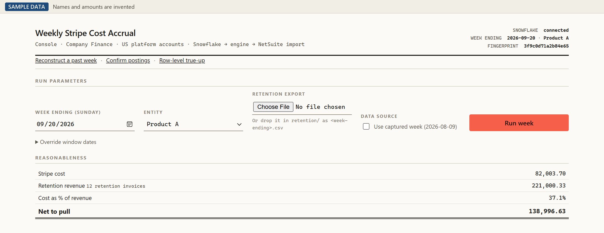
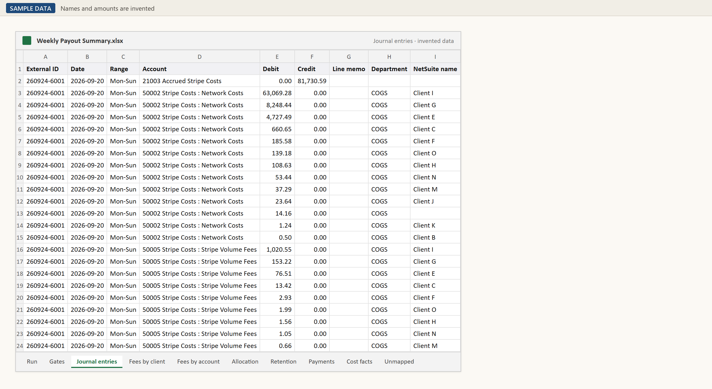
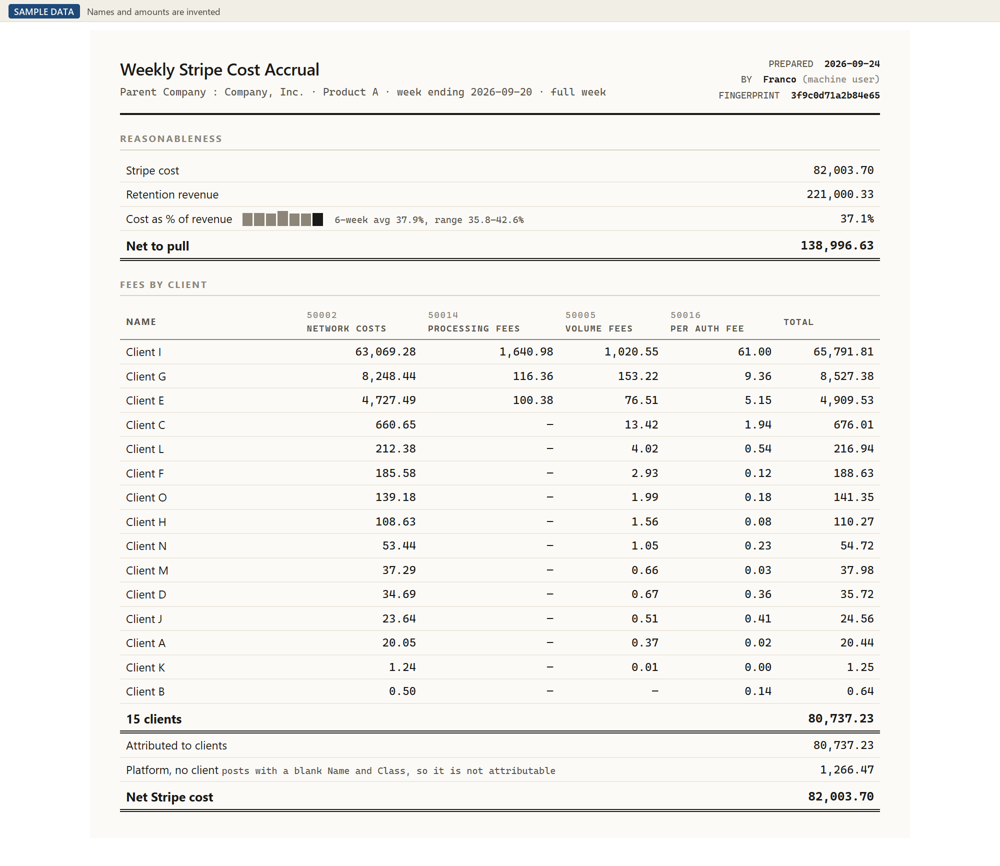

Case study
Three versions of one weekly reconciliation
Our weekly Stripe reconciliation took me 4 hours by hand every week, and 6 at month end. I got it under 30 minutes in KNIME, then rebuilt it as a Python console that runs 16 checks before it exports anything for NetSuite. It's still in testing. Along the way I found about $110K of backdated Stripe entries my KNIME query had been missing since January, and the find drove a reclassification at close.
- Role
- Built the KNIME version alone and specified the console. I decide what it has to produce and check the output. Claude wrote the console's code.
- When
- KNIME first, then the console in September 2026, still in testing
- Tools
- Snowflake, SQL, KNIME, Python, NetSuite, Claude
- Results
- About $110K of missed backdated entries found
- 4 hours a week, 6 at month end, down to under 30 minutes
- 16 checks before anything is exported
- Caught a day that had been booked twice
The problem
When I joined in 2024, invoices and customer payments were both done by hand, about two hours each every week. I replaced both with NetSuite import templates. Then the CFO had us move payouts from cash to accrual, and I designed that whole weekly process myself, from which Stripe report to use to the import templates for every entry.
Every client gets paid on its own week. Some run Monday to Sunday and some run Sunday to Saturday, and they're spread across five timezones, so every transaction has to land in the right client's week before anything gets booked. That's hundreds of thousands of lines in a single week.
By hand it took me 4 hours every week, and 6 at month end because of the extra cutover steps.
First I'd download the reports from the Stripe website, and they were huge, so that alone took a long time. The CSVs were too big to fully load in Excel, so I loaded them into Tableau workbooks to transform and filter them. That's where the client timezone matching lived at first, as a calculated field.
Then I'd export from Tableau to Excel as separate reports, a consolidated workbook pulled them together with Power Query, and then the double-checks. Did I filter the dates right, and did every tab pull and update? There were more than 10 tabs, and that's my count from memory.
I already had a CSV import for the journal entry, but getting the data into that format took time too. Then the workbook with our net payout went to the CFO for review, and he pulled that amount from Stripe into our bank account.
Case study · Stripe reconciliation
Before any automation, every week went through four tools and a review by the CFO.
Stripe website
Download the reports
Go to Reports and download the week's reports as CSV files. They're big, and the downloads are slow.
Tableau
Filter and transform
The files are too big for Excel, so they go into Tableau. Moving each client's activity to its own timezone happens here.
Tableau
Export the results
Each result goes back out of Tableau as its own separate report.
Excel and Power Query
Pull them together
A consolidated workbook pulls every report in with Power Query and works out the net payout.
Excel
Check every tab
Make sure the dates were filtered right and every tab pulled and updated. That's more than ten tabs.
Excel
Shape the entries
Transform the week's data into the NetSuite import formats: invoices, the accrual entry, payments and the deposit.
CFO
Review and pull
The CFO reviews the net payout, then pulls that amount from Stripe into our bank account.
NetSuite
Import and book
Import the files and book the week, with hundreds of lines in each journal entry.
From my own account of the process. The tab count is from memory, not counted from the file.
The first rebuild: KNIME
I rebuilt it in KNIME first. It took about two months. But testing took longer than building.
- The queries pull one extra day on each side of the week, then a filter trims every row back to its own client's week.
- Any cost with a connected account ID gets that client's timezone, and anything without one, usually platform-level costs, stays on UTC. I did that on purpose. Our revenue is booked from each client's weekly reconciliation, which runs on the client's own time, so cutting their costs on the same local day keeps cost of sales matched to that revenue. All 12 queries in the US workflow apply it to every row, and the UK workflow follows the same rule.
- I moved client attribution out of the spreadsheet formulas and into the query, and later, in a separate cost workflow, collapsed nine categorization queries into one.
- One branch only catches fees that don't fit the nine categories I knew about. My note on it says "in case any additional fees pop up."
- Another workflow builds the NetSuite journal entry import. Every line has an External ID, so if the import runs twice NetSuite updates it instead of booking it twice.
Once it's started it runs in 5 to 15 minutes. Door to door, with the typing and the review, it's under 30 minutes.
I wrote up both versions for the team, the manual process and the KNIME one, along with the invoice and payment imports, and those documents were what the team used to run it.


Deep dive
Inside the KNIME workflow
How it ran step by step, what it got right, where it broke down and why I rebuilt it, with the workflow itself redrawn from the file.
Read the deep dive →
Why I rebuilt it again
- Every file path is typed into the workflow, and anyone else running it has to set up their own Snowflake credentials first.
- A re-run overwrites whatever was booked, so there's no way to see what we booked, what Stripe says now and what moved in between.
- Every run starts with ten parameters typed in by hand, dates included, and nothing checks them.
- The US workflow has ten copies of the same component, and all 12 of its database nodes are flagged deprecated by the vendor.
The console


So I rebuilt it again, as a Python console. It pulls the week's Stripe costs from Snowflake, runs them through an engine and writes the NetSuite import files: two journal entries, one per payout window, plus a payments import.
- It checks 16 things before it lets me export, like every fee being categorized, the journal entries balancing, cost reconciling back to the source, and nothing being accrued twice.
- When I override a check, the reason gets written into the run log right next to the numbers it excused.
- Every run saves the exact data it used with a fingerprint, so I can replay any week later even though Snowflake keeps changing.
- It checks every row against earlier runs by Stripe's own row ID. For the week ending September 20 that was 228,255 new rows and none that had been accrued before.
- Each run writes six files: the journal entry import, the payments import, a summary workbook, a workpaper, the run log and the snapshot.
Case study · Stripe reconciliation
Every week goes through these checks before I can export it. If I override one, the reason gets written into the run log next to the numbers it let through.
From a real run · client data removedChecks
- Override No uncategorized feesA $0.03 fee with no account. The reason is logged, but the fee is still unmapped
- Warn No unattributable network costCost Stripe sends with no client posts to the platform line
- Pass Journal entries balanceDebits equal credits in every entry
- Pass Cost reconciles to sourceJournal lines add back to the Snowflake cost total
- Pass Entity allocation tiesPlatform cost splits across entities with nothing created or lost
- Pass Retention matches the rec sheetEach client's retention equals the reconciliation figure
- Pass Retention invoices suppliedThe week's retention invoices are in
- Pass No cost on a provisional accountA placeholder account is not a mapping
- Pass Entity validatedChecked against journal entries already posted
- Pass No open findingsNothing recorded as looking off this week
- Pass Source population accounted forEvery category in the itemized view is declared and its cost captured
- Pass Source view is completeEvery category in Stripe's ledger is declared, so a new fee type gets caught
- Pass Cost/revenue ratio is plausibleA big move means cost and revenue disagree about the week
- Pass Every account has a NetSuite nameNo client cost posts without a name
- Pass Nothing already accruedChecked by Stripe's own row ID against earlier runs
- Pass Cost composition is stableNew, vanished or shifted cost types get flagged
All 16 of the console's checks, with their results from the run for the week ending September 20, 2026. No client data or amounts are shown.


Deep dive
Inside the 16 checks
Every check the console runs before it lets me export, what each one is for, one real week's results and the week it caught an extra day.
Read the deep dive →
How I know it works
- I ran the KNIME version side by side with the manual one and compared them line by line. Sometimes the new one was wrong, and sometimes the manual process had been wrong for months and nobody noticed.
- The console is running next to the manual process too, and the week ending September 20 matches what was booked.
- Rebuilding the journal entries from the saved snapshot matched 14 of 16 client groups to the cent. The other two were a $0.03 fee with no account mapped and $0.01 of rounding.
- Running next to the manual process, the console exposed an error in one week's booked entry. Hand-typed date windows had given each week range an extra day that was already booked. I flagged it and it got fixed.


Results
- The week went from 4 hours by hand, 6 at month end, to under 30 minutes door to door.
- I built a true-up view for costs and credits that show up once a week has been booked. It's what caught the backdated entries below, and the find drove a reclassification at month-end close.
- The Stripe cost dashboard I built alongside it surfaced the unbooked per-authorization fee below. I fixed the dashboard's fee handling, and the fee gets booked going forward now.
Case study · Stripe reconciliation
From 4 hours a week by hand, 6 at month end, to under 30 minutes in KNIME, to a console that checks every week 16 ways and keeps every run.
Generation 1
By hand
- Limit: Stripe downloads too big for Excel, pushed through Tableau first
- Limit: Consolidated with Power Query, then every tab checked by hand
- Entries shaped into NetSuite import files by hand, and the net payout reviewed by the CFO
The process being replaced
Generation 2
KNIME rebuild
- Added: Execution itself runs 5 to 15 minutes
- Added: A completeness branch catches any fee outside the nine known categories
- Added: Builds the NetSuite journal-entry import, keyed on External ID so a re-import cannot double-post
- Added: Run side by side with the manual process before cutover
- Limit: Ten parameters typed by hand at the start of every run
- Limit: Every file path typed into the workflow, and each person sets up their own credentials
- Limit: A re-run overwrites what was booked, and no snapshot is kept
- Limit: Its query window was too narrow and missed backdated Stripe entries
Built, tested and put into production alone
Generation 3
Python console
- Added: Every run saves the data it used, with a fingerprint, so any week can be replayed
- Added: Nothing accrued twice, checked by Stripe's own row ID
- Added: 14 of 16 client groups rebuild from the snapshot to the cent, and the other two are explained
- Added: Caught a booked week where hand-typed dates added a day that was already booked
- Limit: Still in testing next to the manual process, not posting yet
Matching what was booked for the week ending September 20
Every figure on this page is sourced in the case study. No client data is shown.
What didn't work
- My KNIME reconciliation query only looked at a narrow activity window, so backdated Stripe entries fell outside it. It missed about $110K of them from January on, and I only found it once I built the true-up view.
- I put the checker for unknown fees on its own branch, outside the main workflow. Once the weekly run was handed over it wasn't being run every week, and a per-authorization fee went unbooked until my cost dashboard surfaced it.
- Every KNIME run started with dates typed by hand, and one booked week picked up an extra day that had already been booked.
Limits and what's next
- The console isn't posting yet. It's still being tested against the manual process.
- An override records why I let a check through, but it doesn't fix anything. A fee I overrode stayed unmapped, and that check will fail every week until I add the mapping.
- Stripe doesn't send all of its fee data into Snowflake, so some fees can't be tied to a client. The console posts those to the platform line and warns me instead of guessing.
- Posting straight into NetSuite isn't built. It writes import files and a person still imports them.
- The cost dashboard is supposed to replace the per-client workbooks, but they haven't been retired yet.
- We're moving from NetSuite to a new ERP, run in parallel at first. The console reads from Snowflake, so it isn't affected.
How these numbers are sourced
From the KNIME workflow files and the build spec written against them: the ten typed parameters, the ten copied components, the 12 deprecated nodes, the hardcoded paths, the nine-category completeness branch and its note, the journal entry import and its External IDs, and every US query applying the timezone rule row by row. Also from the build spec: the UK queries following the same rule, the widen-then-trim filter, the nine queries collapsed into one and the overwriting outputs.
Read from one console run, the week ending September 20, 2026, through an extract with no client names or dollar amounts: the 16 checks, the snapshot and fingerprint, 228,255 new rows, the 14 of 16 groups rebuilt to the cent, the six files, the override that didn't remap, and what isn't built.
My own account: 4 hours a week and 6 at month end before, and what they went into, under 30 minutes door to door after, 5 to 15 minutes of run time, the side-by-side testing, the per-authorization fee fix, the console matching September 20, the booked week it caught, the dashboard and its per-authorization fee, the true-up view, the invoice and payment imports, the accrual process I designed, the journal entry import that already existed, the CFO's review, why costs follow the client's timezone, the documents I wrote for the team, and that Claude writes the code.
Estimates, stated as estimates: more than 10 tabs in the old workbook, about two hours each for invoices and payments by hand, about two months to build and test the KNIME version, and about $110K of backdated entries, rounded from Stripe. The ~400 hours a year on the home page adds up my estimates for the weekly payout process, invoices, payments and the reporting package.
The reclassification was read from Stripe. The hundreds of thousands of lines a week across five timezones is my own account.